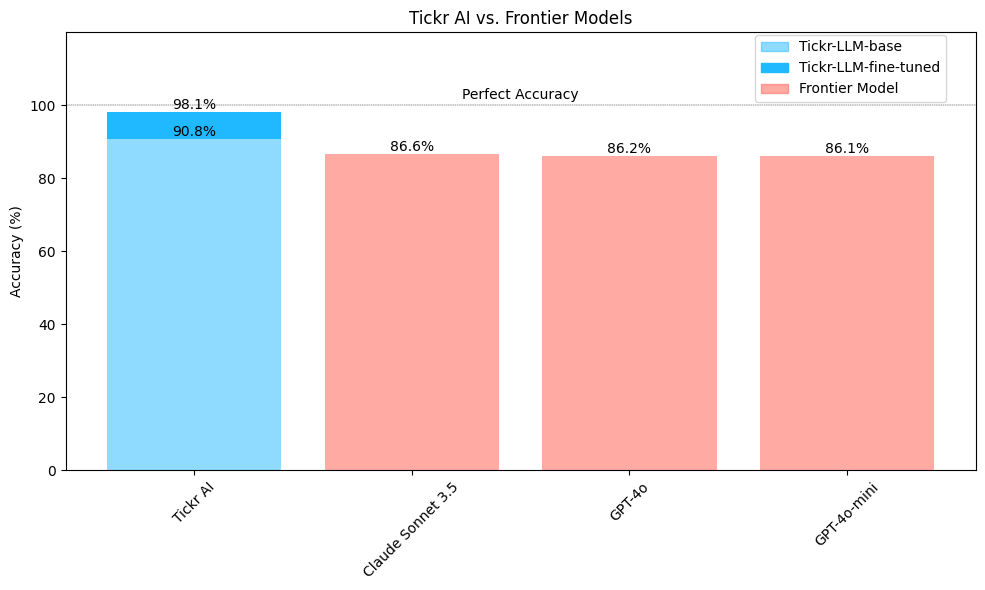
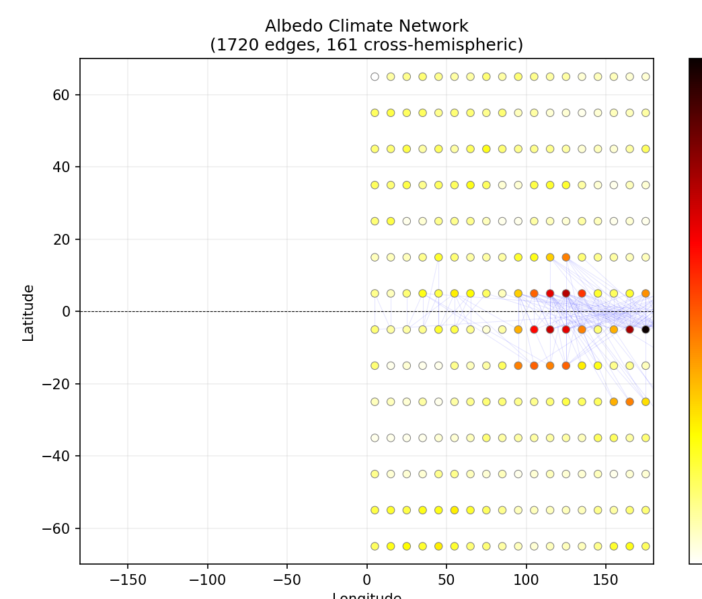

Samuel Kahn
CTO & Head of AI, Tickr Senior AI Advisor, Subpoena Solutions Research Fellow, UC Santa Cruz
I care deeply about agentic systems for discovery, prediction, and research. I enjoy building systems that reason over messy information and turn it into signals and results that show enough of their work to be trusted. In high-stakes work, a plausible answer is not good enough.
Today I lead the research and technical direction of RiskWise at Tickr, a platform that helps insurers and Big Four firms see which risks are turning into litigation and regulatory action before they do. I joined Tickr in 2016 as its first AI hire. The team is now close to twenty, and product and engineering report to me alongside AI.
I've also spent seven years as a fractional AI lead for legal-tech startups, two of them since acquired, building the first systems that read legal demands and draft grounded objections. The work has crossed finance, insurance, healthcare, legal, and science, but it's usually the same problem underneath: find the real signal in messy data and show enough of the work that someone can act on it.
That is also how I lead. I set research strategy and hand real ownership to the scientists doing the work; several of the results below are theirs, not mine. I still hire, stay in the code, and use more tokens than anyone else at the company, and most weeks I'm in front of enterprise clients too.
I came to agents through data science, deep learning, and scientific research, and I still do all three. At NASA Ames I used recurrent networks to forecast load on a microgrid. As a Research Fellow at UC Santa Cruz I built NEO, which uses a conditional generative model to improve the resolution of telescope images, and I've been experimenting with an agent that proposes scientific hypotheses, runs experiments, and then tries to disprove its own result.
Away from AI, I'm a competitive sailor. At 14 I led a team that won an open world championship and became the youngest sailor to do so, with second places at the Etchells and Mumm 30 world championships and a third at the International 14 Worlds in the years since. I was the youngest person ever to be first to finish the Transpacific Yacht Race, and I've skippered a boat at the Olympic trials. Sailing taught me what it takes to be world-class at a craft, and it taught me leadership early.

What I do
Leadership
Nearly twenty people report to me: applied AI scientists, ML engineers, data scientists, software engineers, and product. I built that function from a team of one, hired most of it, and set its structure. Ten or more initiatives run concurrently across it, and my job is deciding which ones deserve the compute and the people.
I set research strategy and then hand real ownership over. The 30-task deep research evaluation was my strategy but another scientist's work, and it is better for that. I promote from within, keep engineers close to customers so they understand what a failure actually costs, and have carried this team through a full pivot to AI-first products with the group intact. Product and engineering were folded under me as the AI function became the center of the product.
Outside the org chart, I've been the technical face to Fortune 10 through Fortune 500 buyers, negotiated partnerships with data providers, labeling vendors, and model platforms including Anthropic and OpenAI, and acted as fractional AI lead for three startups, two of which were acquired.
I run the org and I'm still one of its heaviest hands-on contributors. I post-train the models, write the eval harnesses, and ship code, not just review it. Most of what's below I built myself.
Agents, post-training, and evaluation
Most of my hands-on work is on agent systems and post-training. I post-trained a 4B risk-attribution model that cut errors roughly 50% against GPT-5.2 at nearly 20× lower inference cost, and fine-tuned Qwen 3 with QLoRA/PEFT on eight H100s alongside bge-large-en-v1.5 for retrieval, reaching 98.1% F1 across four hierarchical datasets against 86.1% for GPT-4o and 86.6% for Claude 3.5 under identical conditions. I've built agentic discovery using a Thompson-sampling bandit over natural-language research briefs run as frontier-model search episodes, with reward computed in code rather than by the model, and an MCTS-guided research system that attacks its own findings before recording them. On evaluation I've stood up adversarial LLM-as-judge, capability, regression, and human-gold suites for actuarial, legal, and compliance review. New production failures start as capability tests and, once reliable, become regression tests, so a later model, instruction, or system change cannot quietly undo them. I set the strategy for a 30-task evaluation of high-stakes risk deep research and mentored the scientist who ran it; against open-web retrieval it improved source traceability by 10.4 points and analytical rigor by 3.3. agent infrastructure · RAG tuning · evaluation
Risk intelligence
I lead RiskWise, an agentic risk-intelligence platform licensed by major insurers and Big Four firms. Its agents search more than 50 licensed and public sources, including LexisNexis, CourtListener and RECAP, JPML dockets, SEC EDGAR, DOJ enforcement actions, FDA recalls and FAERS, PubMed, news, X, and Reddit, looking for correlation risk, tail risk, emerging threats, and the unknown unknowns conventional taxonomies miss. The signals feed downstream work in portfolio diversification, underwriting, and board risk.
The predictive core is a multi-armed bandit over research agents, where held-out performance decides which paths get more attention, feeding a discrete-time hazard model of multidistrict litigation consolidation at 0.90 held-out AUC and ranking risks 19 to 33× above the base rate. I backtested it point-in-time using only data available as of January 2022, 2023, and 2024. In each year 16 to 32% of the top 25 ranked risks later became MDLs against a base rate under 1%, surfacing them 8 to 24 months early. benchmarks against frontier models
Legal AI
Seven of my thirteen years in AI have been in legal. At Subpoena Solutions I built the proof-of-concept of an intake system that reads subpoenas, search warrants, Section 2703(d) orders, preservation demands, and emergency requests, classifies the demand, and drafts grounded objections. Six LLM classifiers are grounded in 50-state law. I used DSPy and MIPROv2 to improve them, then added an embedding-based normalization layer so an incorrect generation could not break the downstream workflow. I've fine-tuned models on attorney-reviewed legal process data and built evaluation with confidence-gated attorney review, cutting errors more than 50% against frontier baselines on 20+ tasks. For privacy-sensitive clients whose policies prohibit fine-tuning, I've mentored engineers building self-improving agentic loops that optimize instructions rather than weights. Two of the three legal-tech startups I've advised have been acquired.
Predictive modeling and forecasting
A decade of demand forecasting and causal inference on CPG and retail data. I've built SARIMAX and Prophet pipelines with exogenous regressors, holiday calendars, and Bayesian MCMC fits, benchmarked univariate against multivariate specifications with automated hyperparameter search, and run these at retailer and product-group granularity for national brands. I built Generative Predictor Search over millions of economic series using retrieval, reciprocal rank fusion, and LLM reranking, which cut out-of-sample MAPE 15.6% and ran 13× faster than exhaustive search. I hold a US patent application on causal inference for marketing campaign impact, and trained DeBERTa-XXL across 500+ product classes with a triplet-loss embedding model that anchored a multi-million-dollar contract. My work has crossed financial services, insurance, healthcare, legal, and science: for FIS I worked on dynamic product categorization and applied early reasoning LLMs to Medicare Advantage benefit classification. GPS · causal impact
AI for science
I hold a research fellowship at UC Santa Cruz alongside the CTO role. I'm first author on NEO, a conditional GAN that improves the accuracy of physical measurements by factors of 2 to 10, with code and weights released publicly and coverage in the NVIDIA blog. I'm a co-author on a Nature Portfolio paper, and I built an autonomous discovery system that ran 49 analyses across 25 years of satellite data and reported one of its three hypotheses as inconclusive rather than forcing a conclusion.
Selected work

The Risk Harness
The memory, procedures, permissions, and decision traces an agent needs before you can put a real decision through it.

Verifiable Rewards for Predicting Multidistrict Litigation
A Thompson-sampling bandit allocates research agents under a reward computed in code, feeding a discrete-time hazard model. 0.90 held-out AUC.

Generative Predictor Search
LLM reasoning proposes and validates covariates for time-series forecasting, cutting MAPE 15.6% and running 13× faster than exhaustive search.

NEO photometric super-resolution
A conditional GAN that recovers measurement structure ground-based seeing destroys, improving accuracy by factors of 2 to 10. Featured by NVIDIA.

Beating frontier models on a vertical task
98.1% F1 on dynamic hierarchical categorization, ahead of GPT-4o and Claude 3.5 under identical conditions.

Agentic Discovery
19 cycles and 49 analyses on 25 years of satellite data, with every finding put through an adversarial gate before it was kept.